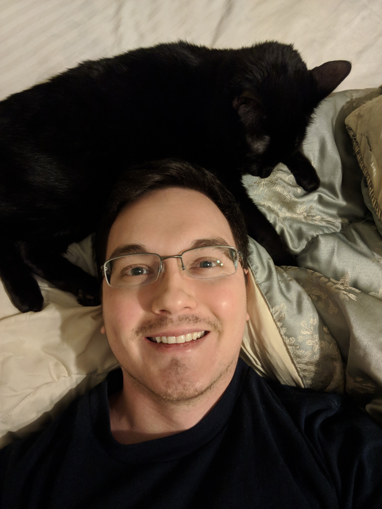

Bio
I am a graduate student in Statistics and Operations Research at the University of North Carolina in Chapel Hill (UNC). Before attending UNC, I taught statistics at the University of North Carolina in Wilmington and worked for an energy consulting firm, Utility Management Services, Inc., located in Wilmington, North Carolina.
My current research interests are in non-convex matrix optimisation, time series, and stochastic modelling. My previous research has been in characteristic-based numerical methods for partial differential equations and new approaches to compression/dimension reduction. I have bachelor's and master's degrees in mathematics from the University of North Carolina in Wilmington.
I have two wonderful pets: a Pitrador named Archie and a black cat-bear named Jiji.
I enjoy rock-climbing, cycling (in cool weather), strategy board games, discovering new breweries, travelling, and blended scotch. I am slowly amassing a luxury stationery collection and currently own pens and mechanical pencils by Montblanc, Montegrappa, Pilot-Namiki, Cross, and Parker. Fahrney's might be my favourite store in the US!